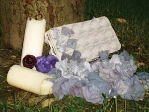

Cotton or wool dryer lint makes a great fire starter. It is safe in fire rings or indoor fireplaces. Previously, I used the chemical, commercial type of fire starter, but ones made from dryer lint are a fun and natural alternative. (Steer clear of polyester, as it tends to melt.)
Collect a grocery bag full of lint, eight to 10 cardboard egg cartons and a few spent candles.
Put the cartons onto a wax-paper-lined cookie sheet and fill each egg section with lint. Melt the candle stubs in a pan over low heat and then carefully fill each lint-filled section with the melted wax. Hot wax can easily burn you, so do not hold the cartons while you are pouring the wax.
After the fire starters have completely cooled, cut them into sixths. You can store them in a recycled coffee can with a lid or in sealable plastic bags.
To use, put one or two of the starters under the kindling and light one side. These starters are especially useful when building a fire under somewhat damp outdoor conditions.
|
 MARTHA ROGUS Use dryer lint to start your next indoor or outdoor fire. |
|
|